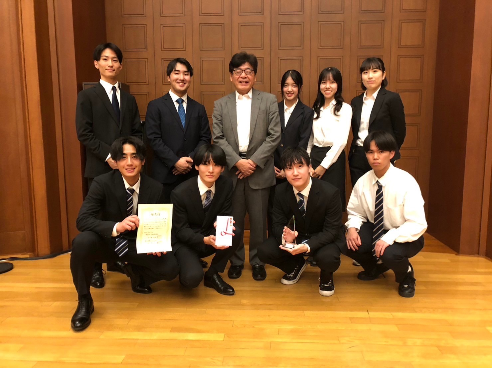
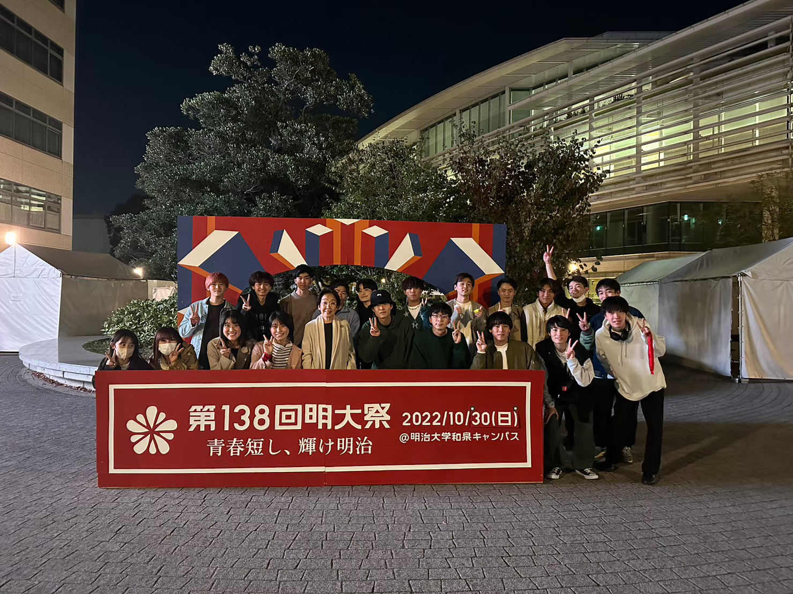

Study
明治大学に入学し、マーケティングやドイツ語を学びながら主に大学特有の2つのゼミに入ることができる制度であるダブルコアを利用することで環境と経済学を学び、多角的な視野を身につけている。

経済学ゼミ
経済学分析ゼミでは経済学についての本を輪読することによって多くの知識を身につけ、それを用いた分析によって、奨学論文やISFJに向けた論文執筆活動を行なっている。

環境ゼミ
環境ゼミでは毎回の授業でそれぞれが関心を持った環境問題についての発表やフィールドワークを通して環境への知見を広げながら、地域に向けて環境について多くの人に知ってもらう外に向けた活動を行なっている。